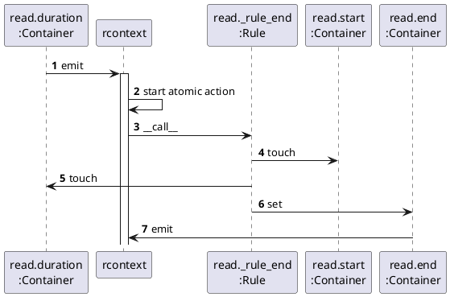

Larch-Reactive by Examples¶
This chapter introduces every feature of larch.reactive, by providing an example.
Sections marked with  describe the internals of larch.reactive and can be skipped.
But keep in mind, if you want to get a real deep insight view: read the code.
describe the internals of larch.reactive and can be skipped.
But keep in mind, if you want to get a real deep insight view: read the code.
Creating Reactive Classes, Cells, Rules¶
Lets come back to the first example. larch.reactive implements the observer pattern to connect rules (observer) to cells (subject).
1>>> import larch.reactive as ra
2>>> from datetime import datetime, timedelta
3>>>
4>>> @ra.reactive
5... class Task(object):
6... start = ra.Cell(datetime.now())
7... end = ra.Cell()
8... duration = ra.Cell(timedelta(hours=3))
9... prev = ra.Cell()
10... desc = ra.Cell("")
11...
12... @ra.rule
13... def _rule_start(self):
14... if self.prev:
15... self.start = self.prev.end
16...
17... @ra.rule
18... def _rule_end(self):
19... self.end = self.start + self.duration
20...
21... def __repr__(self):
22... return "'{}': {} -> {}".format(self.desc, self.start, self.end)
23...
24>>> read = Task(desc="read tutorial", start=datetime(2016, 1, 9, 8),
25... duration=timedelta(hours=2))
26>>> read
27'read tutorial': 2016-01-09 08:00:00 -> 2016-01-09 10:00:00
28>>> write = Task(desc="write own programs", prev=read)
29>>> write
30'write own programs': 2016-01-09 10:00:00 -> 2016-01-09 13:00:00
31>>> read.duration = timedelta(hours=3)
32>>> read
33'read tutorial': 2016-01-09 08:00:00 -> 2016-01-09 11:00:00
34>>> write
35'write own programs': 2016-01-09 11:00:00 -> 2016-01-09 14:00:00
- Line 4:
The
reactive()decorator transforms an “ordinary” python class to a “reactive” class.- Lines 6-10:
Attributes that can be watched by rules must be declared as
Cell. A Cell can have a default value by providing an argument while construction. By default cells are initialized with None.- Line 12, 17:
The
rule()decorator transforms an “ordinary” python method to a rule, that is able to observe cells. Whenever a rule is executed, reading a cell’s value, registers the rule as observer for that cell. When such a cell changes its value, the rule is executed again.- Line 24:
Cells can be initialized by using keyword arguments, while constructing a reactive object.
larch.reactive extends the class __init__ and add the following functionality:
For each cell a Container is created, that stores the cell’s value and acts as subject.
For each rule an Observer object is created calling the rule method, when the observer is notified.
All rules are executed for the first time in their order of appearance.
- Line 31:
Changing a cells value will execute all rules observing the cell.
Note
After several years of using the larch.reactive-library some best practice clues have been evolved:
keep rules short
try to avoid calling functions. Often this can lead to hidden dependencies, if the function accidently read unwanted cells. If you have to call function use the yield mechanism.
Internals of write¶
The following diagramm shows the internal state of write at line 34. (For more in depth information read the code in pcore.py)
![object "write:Task" as write {
__reactive_state__ = [...]
__reactive_rules__ = (...)
}
object "read:Task" as read {
__reactive_state__ = [...]
__reactive_rules__ = (...)
}
object "end:Container" as rend {
value=datetime(2016, 1, 9, 14)
}
object "start:Container" as start {
value=datetime(2016, 1, 9, 11)
}
object "end:Container" as end {
value=datetime(2016, 1, 9, 14)
}
object "duration:Container" as duration {
value=timedelta(hours=3)
}
object "prev:Container" as prev {
value=None
}
object "desc:Container" as desc {
value="write tutorial"
}
object "_rule_start:Rule" as _start {
method=write._rule_start
}
object "_rule_end:Rule" as _end {
method=write._rule_end
}
write o- "[0]" start
end "[1]"--o write
write o-- "[2]" duration
prev "[3]"-o write
desc "[4]"--o write
write o-- "[0]" _start
write o-- "[1]" _end
_end --o start
_end --o duration
_start --o prev
_start --o rend
read o-- rend](_images/plantuml-5e20883c3c14bccce69357e855dc5587b750f2f9.png)
Each Cell attribute is a descriptor that stores its
value in a Container object. write has an attribute
__reactive_state__ containing a list of all Containers
For each rule method a Rule object is created and internally stored in the __reactive_rules__ attribute.
Each Container stores a list of its observers:
_rule_end observes write.start and write.duration.
_rule_start observes write.prev and read.end.
Object interaction¶
The following diagramms show the object interaction at line 31. (For more in depth information read the code in pcore.py)

![autonumber 8
participant rcontext
participant "write._rule_start\n:Rule" as _start
participant "write.prev\n:Container" as wprev
participant "read.end\n:Container" as rend
participant "write.start\n:Container" as wstart
participant "write._rule_end\n:Rule" as _end
activate rcontext
rcontext -> _start : ~__call__
_start -> wprev : touch
_start -> rend : touch
_start -> wstart : set
wstart -> rcontext : emit
rcontext -> _end : ~__call__
note right of rcontext
Same touch and set calls as in read._rule_end
end note
autonumber 17
rcontext -> rcontext : atomic_end
deactivate rcontext](_images/plantuml-4b9faf80f5be9eaee770c4cc4966e16ef8bc0e96.png)
rcontext is the short form of “reactive context”. It is a global singleton object managing the internal event system of larch.reactive.
When
Cellattribute (in this case duration) is changed the Container calls emit of rcontext.rcontext enters an atomic stage.
Cell types¶
While working with larch.reactive it turned out it is convenient to have some more Cell objects.
TypeCell is used to ensure the cell’s value has
a specific type:
1>>> @ra.reactive
2... class Point(object):
3... x = ra.TypeCell(0)
4... y = ra.TypeCell(0, converter=float)
5...
6>>> p = Point(x="1", y="2")
7>>> p.x
81
9>>> p.y
102.0
MakeCell constructs the default attribute by calling
a constructor:
1>>> @ra.reactive
2... class ListContainer(object):
3... values = ra.MakeCell(list, (1, 2, 3))
4...
5>>> lc = ListContainer()
6>>> lc.values
7[1, 2, 3]
Keep in mind: For each new ListContainer object a new list is created.
Pointers¶
A small observer class can be used to inspect cell attributes of an object.
1>>> @ra.reactive
2... class StartObserver(object):
3... subject = ra.Cell()
4...
5... @ra.rule
6... def _rule_print(self):
7... print("start:", self.subject.start)
8...
9>>> observer = StartObserver(subject=write)
10start: 2016-01-09 11:00:00
11>>> read.start += timedelta(hours=0.5)
12start: 2016-01-09 11:30:00
13>>> del observer # deactivate observer
Remember that all rules will be called at construction, therefore the start attribute is printed while the StartObserver is created. The StartObserver class is not very flexible, it can only monitor start attributes. Here is a better observer:
1>>> @ra.reactive
2... class ProxyObserver(object):
3... subject = ra.Cell()
4...
5... @ra.rule
6... def _rule_print(self):
7... print("attribute:", repr(self.subject), self.subject())
8...
9>>> observer = ProxyObserver(subject=ra.Proxy(write).start)
10attribute: <Proxy-'write own programs': 2016-01-09 11:30:00 -> 2016-01-09 14:30:00.start> 2016-01-09 11:30:00
11>>> read.start += timedelta(hours=0.5)
12attribute: <Proxy-'write own programs': 2016-01-09 12:00:00 -> 2016-01-09 15:00:00.start> 2016-01-09 12:00:00
A Pointer acts like a pointer in the C language. An expression like ra.Pointer(write).start points to the attribute start of object write. To get the value of a pointer you have to call it: ra.Pointer(write).start().
>>> ra.Proxy(write).start() == write.start
True
You can also set an attribute value through a pointer:
>>> ra.Proxy(read).start(datetime(2016, 2, 9, 11))
attribute: <Proxy-'write own programs': 2016-02-09 14:00:00 -> 2016-02-09 17:00:00.start> 2016-02-09 14:00:00
Pointers can not only point to simple attributes but to whole expressions:
>>> # prints write.start + 30min
>>> observer = ProxyObserver(subject=ra.Proxy(write).start + timedelta(minutes=30))
attribute: <Proxy-add('write own programs': 2016-02-09 14:00:00 -> 2016-02-09 17:00:00.start, datetime.timedelta(0, 1800))> 2016-02-09 14:30:00
>>>
>>> # prints the maximum of read.end and write.end
>>> observer = ProxyObserver(subject=ra.ProxyExpression.call(
... max, ra.Proxy(read).end, ra.Proxy(write).end))
attribute: <Proxy-max('read tutorial': 2016-02-09 11:00:00 -> 2016-02-09 14:00:00.end, 'write own programs': 2016-02-09 14:00:00 -> 2016-02-09 17:00:00.end)> 2016-02-09 17:00:00
>>> del observer # deactivate observer
Last not least an improved version of the task example.
1>>> @ra.reactive
2... class ProxyTask(object):
3... start = ra.TypeCell(ra.Proxy(datetime.now()), converter=ra.Proxy)
4... end = ra.Cell()
5... duration = ra.TypeCell(ra.Proxy(timedelta(hours=3)), converter=ra.Proxy)
6... desc = ra.Cell("")
7...
8... @ra.rule
9... def _rule_end(self):
10... self.end = self.start() + self.duration()
11...
12... def __repr__(self):
13... return "'{}': {} -> {}".format(self.desc, self.start(), self.end)
14...
15>>> pread = ProxyTask(desc="read tutorial", start=datetime(2016, 1, 9, 8),
16... duration=timedelta(hours=2))
17>>> pwrite = ProxyTask(desc="write own programs", start=ra.Proxy(pread).end)
18>>> pread
19'read tutorial': 2016-01-09 08:00:00 -> 2016-01-09 10:00:00
20>>> pwrite
21'write own programs': 2016-01-09 10:00:00 -> 2016-01-09 13:00:00
TypeCell is used for start and duration to ensure
they contain pointers. The prev attribute is not needed anymore, the
dependencies are created by pointers.
Note
The features of pointers:
Pointers will be evaluated when you call them.
Pointers can point to whole expressions.
The value of simple pointers can be set by calling the pointers with the new value.
Trivial Delegator¶
The implementation of pointers offers a simple mechanism for a trivial delegator:
1>>> @ra.reactive
2... class TaskPrinter(object):
3... task = ra.Cell()
4... # make task attributes to my own
5... start = ra.SELF.task.start
6... end = ra.SELF.task.end
7... desc = ra.SELF.task.desc
8...
9... @ra.rule
10... def _rule_print(self):
11... print("'{}': {} -> {}".format(self.desc, self.start, self.end))
12...
13>>> printer = TaskPrinter(task=write)
14'write own programs': 2016-02-09 14:00:00 -> 2016-02-09 17:00:00
15>>> del printer # deactivate printer
Contexts¶
Changing cell attributes can be influenced by contexts. Context’s can also be used as decorators.
atomic()¶
Changing cells within an atomic context, will postpone the call of rules after the context finishes:
1>>> printer = TaskPrinter(task=read)
2'read tutorial': 2016-02-09 11:00:00 -> 2016-02-09 14:00:00
3>>>
4>>> read.start = datetime(2016, 1, 8, 8)
5'read tutorial': 2016-01-08 08:00:00 -> 2016-01-08 11:00:00
6>>> read.duration = timedelta(hours=2)
7'read tutorial': 2016-01-08 08:00:00 -> 2016-01-08 10:00:00
8>>>
9>>> with ra.atomic():
10... read.start = datetime(2016, 1, 9, 8)
11... read.duration = timedelta(hours=3)
12...
13'read tutorial': 2016-01-09 08:00:00 -> 2016-01-09 11:00:00
14>>> del printer # deactivate printer
- Line 4-7:
Every change will result in a immediate reactive reaction.
- Line 9-13:
Within an atomic context, the rules are called after the context ends.
Note
Features of atomic contexts
rules are executed in an atomic context
in a gevent environment only one greenlet can execute an atomic context.
If another greenlet wants to execute an atomic context it will be locked until the previous context has finished.
untouched()¶
Rules will connect to a all cells read by the rule. Sometimes you want to avoid this:
1>>> @ra.reactive
2... class SillyTaskPrinter(object):
3... task = ra.Cell()
4...
5... @ra.rule
6... def _rule_print(self):
7... # this rule does not depend on self.task.end
8... with ra.untouched():
9... end = self.task.end
10... print("'{}': {} -> {}".format(self.task.desc, self.task.start, end))
11...
12>>> printer = SillyTaskPrinter(task=read)
13'read tutorial': 2016-01-09 08:00:00 -> 2016-01-09 11:00:00
14>>> read.duration = timedelta(hours=2.5)
15>>> read.start = datetime(2016, 1, 8, 8)
16'read tutorial': 2016-01-08 08:00:00 -> 2016-01-09 10:30:00
17>>>
18>>> del printer # deactivate printer
In line 14, the change of duration will trigger a change of end, but SillyTaskPrinter._rule_print does not depend on end, therefore nothing is printed.
Warning
You should use this context only, if there is no other solution. It often signals bad practice.
silent()¶
If you want to change a cell without initiating the reactive reaction:
1>>> with ra.silent():
2... read.start = datetime(2016, 1, 9, 8)
3...
4>>> read
5'read tutorial': 2016-01-09 08:00:00 -> 2016-01-08 10:30:00
6>>>
7>>> read._rule_end()
8>>> read
9'read tutorial': 2016-01-09 08:00:00 -> 2016-01-09 10:30:00
- Line 1:
The silent context disables the reactive behaviour.
- Line 4:
read is in an inconsistent state: start > end.
- Line 7:
Calling the rule manually updates the depended attributes.
Warning
You should use this context only, if there is no other solution. It often signals bad practice.
yield rules¶
Often rules should trigger a function with a big bunch of operations. Such a function should be called outside the atomic context to ensure:
the rule should not depend on unwanted cells used in the function
in gevent environments the function should not lock other greenlets by locking the atomic context.
Therefore rules can be written as co-routines:
1>>> @ra.reactive
2... class TaskObserver(object):
3... task = ra.Cell()
4...
5... @ra.rule
6... def _rule_trigger_action(self):
7... self.task.end # touch without using the value
8... yield
9... # many operations using different cells
10... # the rule does not depend on these cells
The yield separates a rule into an atomic part above the yield and an operational part after yield.
Rule Order¶
At construction rules are called in the order of their appearance.
1>>> @ra.reactive
2... class RuleOrderDemo(object):
3... a = ra.Cell(0)
4... b = ra.Cell(0)
5... c = ra.Cell(0)
6...
7... @ra.rule
8... def _rule_first(self):
9... self.c = self.b + 1
10... print("rule first is called c =", self.c)
11...
12... @ra.rule
13... def _rule_second(self):
14... self.b = self.a + 1
15... print("rule second is called b =", self.b)
16...
17>>> demo = RuleOrderDemo()
18rule first is called c = 1
19rule second is called b = 1
20rule first is called c = 2
21>>> demo.a, demo.b, demo.c
22(0, 1, 2)
As you can see _rule_first is called two times because “_rule_second” changes b and c must be updated. An internal optimization mechanism, rearranges the call order, to minimize the count of rule calls:
1>>> demo.a = 2
2rule second is called b = 3
3rule first is called c = 4
larch.reactive can be forced to obey a call order by using the
rule() with a parameter.
1>>> @ra.reactive
2... class RuleOrderDemo(object):
3... a = ra.Cell(0)
4... b = ra.Cell(0)
5... c = ra.Cell(0)
6...
7... @ra.rule(2)
8... def _rule_first(self):
9... self.c = self.b + 1
10... print("rule first is called c =", self.c)
11...
12... @ra.rule(1)
13... def _rule_second(self):
14... self.b = self.a + 1
15... print("rule second is called b =", self.b)
16...
17>>> demo = RuleOrderDemo()
18rule second is called b = 1
19rule first is called c = 2
Agents¶
To inspect internals of a cell agents can be used.
old()¶
Within a rule old() delivers the value before the
cell was changed:
1>>> @ra.reactive
2... class TaskPrinter(object):
3... task = ra.Cell()
4...
5... @ra.rule
6... def _rule_print(self):
7... otask = ra.old(self.task)
8... if otask.start == self.task.start and otask.end == self.task.end:
9... return
10... print("'{}': {}({}) -> {}({})".format(
11... self.task.desc, self.task.start, otask.start,
12... self.task.end, otask.end))
13...
14>>> printer = TaskPrinter(task=read)
15>>> read.start = datetime(2016, 1, 8, 8)
16'read tutorial': 2016-01-08 08:00:00(2016-01-09 08:00:00) -> 2016-01-08 10:30:00(2016-01-09 10:30:00)
17>>> del printer # deactivate printer
- Line 7:
The otask object has the same cell attributes as self.task but their values are the values before the atomic context was entered.
- Line 8:
Only print if the values have changed.
Note
The Lifetime of Reactive objects
In line 17 the the printer is deactivated. This is because inside the reactive framework all references to objects are weakrefs. If an object is garbage collected all “cell to rule” connections will be also destroyed.
cell()¶
The cell() agent delivers the internal
Container object of the cell
1>>> cread = ra.cell(read)
2>>> cread.end
3<Container(7fc2247a1ca8: datetime.datetime(2016, 1, 8, 10, 30)>
4>>> cread.end.get_observers()
5[<Rule _rule_start(0, 60) of 'write own programs': 2016-01-08 10:30:00 -> 2016-01-08 13:30:00>]
6>>> cread.end.get_value()
7datetime.datetime(2016, 1, 8, 10, 30)
The cread object has the same cell attributes as self.task but
their values point to the Container objects,
containing their value.
Collections¶
larch.reactive provides subclasses of some standard mutable containers.
List()¶
A list that fires events when it is changed. It provides two reactive “event”-attributes: __action_start__ is set before the list is changed, and __action_end__ is set after the list has changed.
1>>> @ra.reactive
2... class ContainerObserver(object):
3... subject = ra.Cell()
4...
5... @ra.rule
6... def _rule_print_start(self):
7... print("action start:", self.subject.__action_start__)
8...
9... @ra.rule
10... def _rule_print_end(self):
11... print("action end:", self.subject.__action_end__)
12...
13>>> from larch.reactive.rcollections import List
14>>> container = List()
15>>> observer = ContainerObserver(subject=container)
16action start: None
17action end: None
18>>>
19>>> container.append(1)
20action start: ('insert', (0, 1))
21action end: ('insert', (0, 1))
22>>>
23>>> container[0] = 2
24action start: ('change', (slice(0, 1, None), [2]))
25action end: ('change', (slice(0, 1, None), [2]))
26>>>
27>>> container[:] = [1, 2, 3]
28action start: ('change', (slice(0, 1, None), [1, 2, 3]))
29action end: ('change', (slice(0, 1, None), [1, 2, 3]))
30>>>
31>>> container.reverse()
32action start: ('order', 'reverse')
33action end: ('order', 'reverse')
34>>>
35>>> container.sort()
36action start: ('order', 'sort')
37action end: ('order', 'sort')
38>>>
39>>> container += [4, 5, 6]
40action start: ('extend', [4, 5, 6])
41action end: ('extend', [4, 5, 6])
42>>>
43>>> container *= 2
44action start: ('imul', 2)
45action end: ('imul', 2)
46>>>
47>>> del container[2:-2]
48action start: ('delete', slice(2, 10, None))
49action end: ('delete', slice(2, 10, None))
The example shows what you have to expect in the action attributes: Their value is always None, if no event occurs. When the list is changed first __action_start__ is fired than __action_end__ is fired. The event is always a pair with the event type at the first place and informations about the event in the second place.
Dict()¶
Equally to List Dict is a reactive dictionary. It provides two reactive “event”-attributes: __action_start__ is set before the dictionary is changed, and __action_end__ is set after the list has changed.
1>>> from larch.reactive.rcollections import Dict
2>>> container = Dict()
3>>> observer = ContainerObserver(subject=container)
4action start: None
5action end: None
6>>>
7>>> container[1] = "one"
8action start: ('change', (1, 'one'))
9action end: ('change', (1, 'one'))
10>>>
11>>> container.update({2: "two", 3: "three"})
12action start: ('update', (({2: 'two', 3: 'three'},), {}))
13action end: ('update', (({2: 'two', 3: 'three'},), {}))
14>>>
15>>> container.popitem()
16action start: ('delete', 1)
17action end: ('delete', 1)
18(1, 'one')
19>>>
20>>> container.clear()
21action start: ('clear', None)
22action end: ('clear', None)
Pickle¶
The reactive base class SimpleReactive() defines
the standard pickle methods __getstate__ and __setstate__ to pickle
the cells values by default.
Threading¶
Reactive classes are not thread save but the state of an
ReactiveContext is thread local.
This means: As long every Reactive object is used by only one thread
you can work with several isolated threads. In Microsoft COM this is called
Apartment Threading Model.
Debugging Helpers¶
Sometimes you got stuck, wondering why a rule is called. (Often because the best practice tips have been ignored). larch.reactive provides some helper functions to find out what is going on:
1>>> import os
2>>> os.environ["LARCH_REACTIVE"] = "python"
3>>> import larch.reactive as ra
4>>> import larch.reactive.debug as debug
5>>> from datetime import datetime, timedelta
6>>>
7>>> @ra.reactive
8... class Task(object):
9... start = ra.Cell(datetime.now())
10... end = ra.Cell()
11... duration = ra.Cell(timedelta(hours=3))
12... prev = ra.Cell()
13... desc = ra.Cell("")
14...
15... @ra.rule
16... def _rule_start(self):
17... if self.prev:
18... self.start = self.prev.end
19...
20... @ra.rule
21... def _rule_end(self):
22... self.end = self.start + self.duration
23...
24... def __repr__(self):
25... return "'{}'".format(self.desc)
26...
27>>> read = Task(desc="read tutorial", start=datetime(2016, 1, 9, 8),
28... duration=timedelta(hours=2))
29>>> write = Task(desc="write own programs", prev=read)
30>>>
31>>> print(debug.dump(read))
32cells of 'read tutorial'
33 start(Cell-5726ac8)
34 <Rule _rule_end(0, 2) of 'read tutorial'>(5826598)
35 end(Cell-5726cc8)
36 <Rule _rule_start(0, 3) of 'write own programs'>(58266d8)
37 duration(Cell-57268c8)
38 <Rule _rule_end(0, 2) of 'read tutorial'>(5826598)
39 prev(Cell-5726a48)
40 <Rule _rule_start(0, 1) of 'read tutorial'>(5826548)
The dump function of larch.reactive.debug inspects a reactive object and prints for each cell the rules depending on that cell.
Note
larch.reactive has a fast cython implementation that is imported by default, and a pure python implementation as fallback. The debugging helpers only work with the pure python implementation! Setting os.environ[“LARCH_REACTIVE”] = “python” before(!) import larch.reactive will force to use the pure python version.
Within a debug context you atomic action are logged to a stream (by default sys.stderr)
1>>> # from io import StringIO
2>>> from io import BytesIO as StringIO
3>>> out = StringIO()
4>>>
5>>> with debug.debug(output=out):
6... read.start += timedelta(hours=0.5)
7...
8>>> print(out.getvalue())
9emit(1) <console>(2): ''
10 (<Rule _rule_end(0, 2) of 'read tutorial'>,)
11
12call rule <Rule _rule_end(0, 5) of 'read tutorial'>
13 touch ('read tutorial'.<Cell start(1/0)>)
14 _rule_end in <console>(16): ''
15
16 touch ('read tutorial'.<Cell duration(0/2)>)
17 _rule_end in <console>(16): ''
18
19 emit(2) <console>(16): ''
20 (<Rule _rule_start(0, 3) of 'write own programs'>,)
21
22
23call rule <Rule _rule_start(0, 6) of 'write own programs'>
24 touch ('write own programs'.<Cell prev(2/3)>)
25 _rule_start in <console>(11): ''
26
27 touch ('write own programs'.<Cell prev(2/3)>)
28 _rule_start in <console>(12): ''
29
30 touch ('read tutorial'.<Cell end(3/1)>)
31 _rule_start in <console>(12): ''
32
33 emit(2) <console>(12): ''
34 (<Rule _rule_end(0, 4) of 'write own programs'>,)
35
36
37call rule <Rule _rule_end(0, 7) of 'write own programs'>
38 touch ('write own programs'.<Cell start(1/0)>)
39 _rule_end in <console>(16): ''
40
41 touch ('write own programs'.<Cell duration(0/2)>)
42 _rule_end in <console>(16): ''
43
44
45
This is how you have to read the output:
- Line 9:
The “emit” commands says that some reactive rules will be called. In a real program you will see the source file name and line instead of <console>(2): ‘’. The embraced number is the atomic context recursion level: 1 is the outer most.
- Line 10:
After each emit command a list of rules to be called is printed.
- Line 12:
“call rule” is printed when a rule is executed, followed by some informations about the rule. After a call rule an indented block of actions inside the rule is printed.
- Line 13-14:
“touch” indicates the acces of a cell that binds the rule to the cell. (Here the cell start of the “read tutorial” task). The Line is followed by a traceback.
- Line 19:
Inside _rule_end _rule_start is emitted.